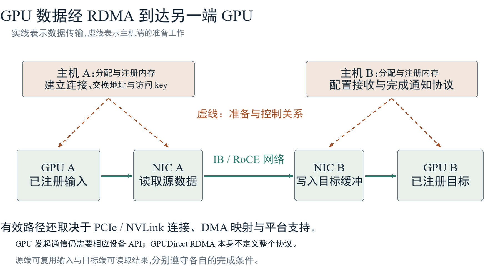

代码块旁的行号链接指向本课采用的提交，仓库及许可见课末。
1 四个 rank 的梯度归约
一组数据并行训练任务中，四个 rank 保存相同模型，各自处理一份样本并产生本地梯度。若各份样本数相同、每个本地梯度已按本地样本求平均，四份梯度求和再除以 4，才得到这一步的全局平均梯度。AllReduce 的 SUM 只负责求和；除法由框架或指定归约操作承担。各 rank 有效 token 数不同时，还要按实际权重处理，简单平均各 rank 的局部均值会改变训练目标。
rank 是 communicator 内的逻辑编号；communicator 定义参与者集合及对应通信资源。它与机器编号、GPU 物理编号、CUDA_VISIBLE_DEVICES 后的逻辑设备编号属于不同坐标系。常见训练配置是一进程一 GPU，但 communicator 的概念本身不等于操作系统进程。不同 DP、TP、EP 分组可以让同一张 GPU 在多个 communicator 中拥有不同 rank。
四个 rank 的八元素输入；仅用于手推，未进行设备运行
| rank | 输入向量 | ReduceScatter SUM 后保留的片段 |
|---|---|---|
| 0 | [1,2,3,4,5,6,7,8] | [64,68] |
| 1 | [11,12,13,14,15,16,17,18] | [72,76] |
| 2 | [21,22,23,24,25,26,27,28] | [80,84] |
| 3 | [31,32,33,34,35,36,37,38] | [88,92] |
逐位置求和得到 [64,68,72,76,80,84,88,92]。AllReduce 把完整结果交给所有 rank；ReduceScatter 把这个结果分成四份，每个 rank 仅保留自己的连续两元素片段。接着对这四份片段做 AllGather，所有 rank 就能恢复完整结果。这一数据关系解释了为什么参数分片训练经常围绕 AllGather 和 ReduceScatter 组织。
count 的单位是元素；下面取 P=4
| 操作 | 输入/输出分布 | 对应 count 与分配大小 |
|---|---|---|
| Broadcast | root 的完整输入复制给所有 rank | count=8；每个接收区至少 8 元素 |
| Reduce SUM | 所有输入逐元素相加，仅 root 得到结果 | count=8；root 接收 8 元素 |
| AllReduce SUM | 所有 rank 得到相同完整和 | count=8；各自输入/输出 8 元素 |
| ReduceScatter SUM | 和向量的第 r 片保留在 rank r | recvcount=2；各自输入 8、输出 2 元素 |
| AllGather | 各 rank 输入一片，输出按源 rank 拼接 | sendcount=2；各自输入 2、输出 8 元素 |
| AllToAll | 每个源给每个目标一片，接收按源排序 | count=1 为每对 rank 的片长；输入/输出各 4 元素 |
AllToAll 不执行归约。令源 rank s 发往目标 d 的标量为 10s+d，那么 rank 2 收到 [2,12,22,32]；它自己的发送数组则是 [20,21,22,23]。将发送缓冲按目标分段、接收缓冲按来源分段，是 MoE token 交换和转置通信的基本布局。变长路由还要传递各对 rank 的计数与偏移，普通等长 AllToAll 的一个 count 无法表达所有变长分配。
参与同一 collective 的 rank 必须在对应调用上匹配操作、数量、dtype、root 等合同。一个 rank 在第 k 次调用 AllReduce，另一个却进入 AllGather，即使两边字节数相同也不能据此配对。操作通常提交到 CUDA stream；主机 API 返回成功主要表明调用被接纳，读取结果仍需遵守该 stream 的完成顺序。
代码 1 把缓冲、元素数、归约方式和 stream 一起交给 NCCL 排队
static inline ncclResult_t ncclAllReduceConfigImpl(const void* sendbuff, void* recvbuff, size_t count,
ncclDataType_t datatype, ncclRedOp_t op, ncclComm_t comm,
cudaStream_t stream, const ncclCollConfig_t* config) {
// clang-format off
struct ncclInfo info = {ncclFuncAllReduce, "AllReduce",
sendbuff, recvbuff, count, datatype, op, 0, comm, stream, /* Args */
ALLREDUCE_CHUNKSTEPS, ALLREDUCE_SLICESTEPS};
// clang-format on
NCCLCHECK(ncclParseCollConfig(config, &info.collConfig));
return ncclEnqueueCheck(&info);
}ncclInfo 保留 sendbuff、recvbuff、count、datatype、op、comm、stream；ncclEnqueueCheck 进入后续检查与排队。这里没有把 count 解释成 byte，也没有把 op 固定为求平均。
本课 NCCL 固定提交属于 v2.32.6-1 合并版本，已经提供 ncclAlltoAll 入口。旧教程常用 grouped Send/Recv 实现 AllToAll，不能把那种写法误当成所有版本的唯一接口。
NCCL collective 的输入输出与 count 合同
情境 4 个 rank 做 ReduceScatter，recvcount=1024，dtype 为 FP32。随后以 AllGather 还原完整布局。
问题 求每卡归约前后字节数及 AllGather 的 sendcount。
答案
结论 每卡输入 16384 B、输出 4096 B；随后每卡发送 1024 个元素。
推导 ReduceScatter 的 recvcount 表示一个 rank 保留的元素数。每卡输入 4×1024×4=16384 B，输出 1024×4=4096 B。随后 AllGather 每 rank 发送 1024 个 FP32，拼回四个来源，输出仍为 16384 B。
回看题干 ↑2 Ring AllReduce 的分片传输
把八个元素分成 C0=[0,1]、C1=[2,3]、C2=[4,5]、C3=[6,7] 四个索引片段。假定教学 ring 顺序为 0→1→2→3→0，每轮每个 rank 向下一位发送一个片段并从上一位接收。前半段把各 rank 的贡献叠加，后半段传播已完成的片段。实际拓扑 ring 的顺序由实现选择，未必等于用户 rank 的数值顺序。
每轮各 rank 发出的片段编号；接收后按阶段处理
| 轮次 | rank 0 | rank 1 | rank 2 | rank 3 | 接收方动作 |
|---|---|---|---|---|---|
| RS 1 | C3 | C0 | C1 | C2 | 加上本地对应输入 |
| RS 2 | C2 | C3 | C0 | C1 | 再加本地贡献 |
| RS 3 | C1 | C2 | C3 | C0 | 完成各自负责片段 |
| AG 1 | C0 | C1 | C2 | C3 | 保存完成结果 |
| AG 2 | C3 | C0 | C1 | C2 | 继续转发完成结果 |
| AG 3 | C2 | C3 | C0 | C1 | 取得最后缺少的片段 |
只看 C0：rank 1 先发 [11,12] 给 rank 2；rank 2 加 [21,22] 得 [32,34]，发给 rank 3；rank 3 加 [31,32] 得 [63,66]，发给 rank 0；rank 0 再加 [1,2] 得 [64,68]。随后完成结果沿 0→1→2→3 传播。一个片段经过三次边传输收集四份贡献，再经三次边传输让其余 rank 获得结果。

只追踪 C0 的 ReduceScatter 与 AllGather；其他片段在同一批轮次中并行推进。
代码 2 发出起始片段，随后接收、归约并转发
// step 0: push data to next GPU
chunk = modRanks(ringIx + nranks - 1);
chunkOffset = chunk * chunkCount;
offset = gridOffset + elemOffset + chunkOffset;
nelem = (int)min(chunkCount, remCount - chunkOffset);
prims.directSend(offset, offset, nelem);
// k-2 steps: reduce and copy to next GPU
for (int j = 2; j < nranks; ++j) {
chunk = modRanks(ringIx + nranks - j);
chunkOffset = chunk * chunkCount;
offset = gridOffset + elemOffset + chunkOffset;
nelem = (int)min(chunkCount, remCount - chunkOffset);
prims.directRecvReduceDirectSend(offset, offset, nelem);
}ringIx 是当前 rank 在该 channel ring 中的位置。起始片段为 (ringIx+P−1) mod P，中间 j=2…P−1 的循环选择后续片段。directRecvReduceDirectSend 把接收、加本地贡献、向下一位发送连成流水操作。
offset=gridOffset+elemOffset+chunkOffset 显示真实实现还把输入分给不同 channel，并按循环推进。nelem 处理尾块，真实 chunkCount 不一定就是整张输入的 N/P。此处手推把多 channel 和尾部简化掉，仅保留数据依赖。
代码 3 最终归约与传播边界融合，然后转发其他完成片段
// step k-1: reduce this buffer and data, which will produce the final
// result that we store in this data and push to the next GPU
chunk = ringIx + 0;
chunkOffset = chunk * chunkCount;
offset = gridOffset + elemOffset + chunkOffset;
nelem = (int)min(chunkCount, remCount - chunkOffset);
prims.directRecvReduceCopyDirectSend(offset, offset, nelem, /*postOp=*/true);
// k-2 steps: copy to next GPU
for (int j = 1; j < nranks - 1; ++j) {
chunk = modRanks(ringIx + nranks - j);
chunkOffset = chunk * chunkCount;
offset = gridOffset + elemOffset + chunkOffset;
nelem = (int)min(chunkCount, remCount - chunkOffset);
prims.directRecvCopyDirectSend(offset, offset, nelem);
}directRecvReduceCopyDirectSend 在得到自身负责的最终片段后，既保存又立即发送；这把 RS 的最后一次接收与 AG 的首次发送衔接起来。之后的 directRecvCopyDirectSend 只复制和转发，不再加入原输入。
末尾另有一次 directRecv 收齐最后片段。不能因源码没有两个名为 ReduceScatter/AllGather 的独立调用，就认为它没有对应的两阶段数据关系。也不能把融合后的函数数目当成网络传输轮数。
每个 rank 在两阶段中各发送 P−1 个大小为 N/P 的片段，因此每 rank 单向发送量为 2(P−1)N/P；接收量相同。若把发送与接收相加，会得到两倍数值。用全双工链路带宽估时间时，应先明确带宽指标是每方向还是双向合计，避免再额外乘一次 2。
情境 8 个 rank 组成单环，各有 64 MiB 输入，执行 ReduceScatter 加 AllGather。
问题 求每 rank 的单向发送、单向接收和收发合计字节数。
答案
结论 各发、收 112 MiB，收发合计 224 MiB。
推导 64 MiB 切成 8 份，每份 8 MiB。ReduceScatter 发送 7 份，AllGather 再发送 7 份，每 rank 发 14×8=112 MiB，也收 112 MiB。两向计数合计 224 MiB；按可同时收发的单向带宽估时，用同方向字节作分子。
回看题干 ↑3 消息大小与通信耗时
用 α 表示每个依赖轮次的固定延迟，用 β 表示每 byte 的传输时间，忽略计算、拥塞、填充和流水细节，可写单次消息时间 α+nβ。这个模型帮助比较算法趋势；α 既不一定等于一次 kernel launch，也不包含所有生产系统开销。多 channel、硬件归约和交换网络会改变有效参数。
教学条件取 P=8、α=3 μs、有效单向带宽 25 GB/s，β=1/(25×10⁹) s/byte。N=256 MiB 时，每 rank 发送 448 MiB，传输项约 18.790 ms，加 42 μs 启动项后为 18.832 ms。N=4 KiB 时，传输项只有约 0.287 μs，模型时间约 42.287 μs，主要由轮次决定。这些是估算值，未测设备。
一棵简单二叉树可在约 log₂P 级中归约，再按树广播。若每一级都串行传完整 N byte，得到 T≈2log₂P(α+Nβ)。八 rank、4 KiB 的同一假设给出约 18.983 μs，比 Ring 的启动项小；大消息下，这个朴素树模型却会重复经过更大的关键路径数据量。
NCCL 的真实树算法会使用分块、流水和双树等方法分摊内部节点负载，不能用上面的朴素公式给真实 Tree 下性能结论。Ring、Tree、NVLS 等候选还受到拓扑与硬件能力限制。某次修改强制 Ring 后变快，只能说明那组条件下该选择更合适；模型尺寸、rank 数和网络变化后应重新核对。
ReduceScatter 和 AllGather 的 Ring 单阶段每 rank 发送量各为 (P−1)N/P，这里的 N 指完整数组大小。两者 count 语义不同，却可用相同完整数组尺度计账。对于 AllToAll，若每对 rank 交换 m byte、把本地自拷贝单独处理，每 rank 外发 (P−1)m byte；所有目标同时注入流量时，交换网络的二分带宽和热点也会进入关键路径。
↑ 返回知识点目录4 nccl-tests 的 busbw
代码 4 从 count、dtype 和时间计算 algbw，再乘 rank 因子
void AllReduceGetBw(size_t count, size_t typesize, double sec, double* algBw, double* busBw, int nranks) {
double baseBw = (double)(count * typesize) / 1.0E9 / sec;
*algBw = baseBw;
double factor = ((double)(2*(nranks - 1)))/((double)nranks);
*busBw = baseBw * factor;
}baseBw=count×typesize/1e9/sec，使用十进制 GB/s。AllReduce 的 count 是完整输入元素数，所以 algbw=N/t。busbw 再乘 2(P−1)/P，将结果换成该 collective 的传输量口径。
busbw 是根据操作语义与 rank 数算出来的派生指标，无法直接告诉你某块 NIC、某条 NVLink 或某条 PCIe 链路实际搬了多少 byte。存在层级通信、硬件 multicast/reduction 或链路共享时，更需结合具体路径理解。
取 N=256 MiB、P=8、时间 t=10 ms，algbw≈26.844 GB/s，busbw≈46.976 GB/s。若把 256 MiB 错当 256 MB，或者把时间列的微秒当毫秒，结果会系统性偏离。该版本 common.cu 将时间秒数乘 10⁶ 得到 timeUsec；阅读表格时按程序表头和转换代码核对单位，不能仅凭 PERFORMANCE.md 的概述句。
各操作带宽公式里的 N 必须统一到完整逻辑数组
| 操作 | N 的定义 | busbw / algbw |
|---|---|---|
| AllReduce | count×sizeof(dtype) | 2(P−1)/P |
| ReduceScatter | P×recvcount×sizeof(dtype) | (P−1)/P |
| AllGather | P×sendcount×sizeof(dtype) | (P−1)/P |
400 Gb/s 链路的原始比特率除以 8 是 50 GB/s，实际有效负载还受协议、包大小、拥塞和其他传输影响。多网卡并行时的总吞吐不能直接与单端口 50 GB/s 比较；双向统计也不能当作单向上界。小消息应同时报告延迟，较高的 busbw 不会自动说明应用的短消息更快。
↑ 返回知识点目录跨节点 AllReduce
↑ 返回知识点目录NCCL 的梯度归约
有两台机器，每台两张 GPU。四个 rank 各持有同形的梯度张量，优化器要求各 rank 都得到四份梯度的和。建立 communicator 后，各参与者以相匹配的顺序调用 AllReduce，使用一致的 count、类型和规约操作。提交在指定 CUDA stream 上排队；后续更新须与 collective 的设备完成建立顺序。GPU 在一次调用里既搬运分块也参与加法。
选 Ring 作教学例，先 ReduceScatter 聚合各块并确定所有者，再 AllGather 分发完成的块。若每份输入为 M 字节，四卡时每 rank 单向发 2×(3/4)M=1.5M。拓扑、消息量、协议和实现可能使 NCCL 选择不同算法与路径。若一张卡算梯度晚，其他卡的 NCCL kernel 区间可提前开始等待，先比较到达点，再核对每字节代价。
NCCL · communicator 以及 rank 与设备的对应
↑ 返回知识点目录RDMA 的跨机传输
跨节点的一跳涉及源缓冲、网卡可使用的注册信息、队列对 QP、发送工作请求与完成队列 CQ。对允许单边写的通信，发送方利用已交换的远端地址与权限标识描述目标，网卡按工作请求搬运 payload。GPUDirect RDMA 在驱动、内存注册和拓扑支持时让 NIC 直接访问 GPU 显存；另一条可能路径是经主机缓冲中转。核对实际 transport、拓扑、端口和拷贝行，才能判断本次使用了哪一条。
请求入队、源缓冲何时可复用、远端 GPU 何时能安全读取，是三个时刻。通信协议需要把数据与对应本轮的通知、可见性以及消费者流依赖连接起来。例：发送端的完成允许它回收旧描述符，接收端仍需等待约定的到达和可见性，再让归约 kernel 消费这块梯度。两轮复用同一槽时用代次和完成条件避免误读上一轮。
假设四个 rank 在相同全局序号下都做 AllReduce。用 nsys 读到某 rank 的前序 GEMM 晚 8 ms，其他 rank 的通信区间各多出近 8 ms，链路有效速率稳定；先修晚到的计算。若到达基本同步但跨节点段明显慢于基线，同时端口出现持续拥塞或所选网卡与 GPU 不近，再比较链路与 GPU–NIC 通路。保持 payload、拓扑、并发与算法选择一致，复验端到端步时。
NVIDIA · GPUDirect RDMA 的注册、同步与顺序
情境 两台机器各两张卡做同一 AllReduce。A 轮四个 rank 同时到达，5 ms 后完成；B 轮前三个在 0 ms、最后一个在 8 ms 到达，全部在 13 ms 完成。
问题 比较全员到达后的共同尾部与最早 rank 所见区间。下一步采什么？
答案
结论 共同尾部仍为 5 ms，最早 rank 的区间增长 8 ms，应先追最后 rank 的上游工作。
推导 A 轮从 0 到 5，B 轮从 8 到 13，两个尾部相同。对齐 step 与 collective 序号，在最后 rank 上比较前序输入与 GEMM，并检查端口吞吐是否稳定。到达时间本身不足以定案，若全员齐到以后的搬运也变慢，再查网络。
回看题干 ↑5 GPU 间的物理路径
同机 GPU 若具有可用的 CUDA P2P 连通性，数据可通过 NVLink 或 PCIe 访问。NVLink 提供 GPU 间高速连接，NVSwitch 让多条 NVLink 构成交换域；“同一机器”本身不保证所有 GPU 对都有相同带宽、延迟或 P2P 可达性。PCIe switch、root complex、CPU socket 和设备绑定会改变实际路径。
跨机传输通常经过发送 GPU 内存→本地 NIC→网络→远端 NIC→接收 GPU 内存。GPUDirect RDMA 允许 NIC 对受支持并正确注册的 GPU 内存进行 DMA，减少 host bounce buffer 中转。CPU 仍可负责初始化、地址与 key 交换、发工作请求、错误处理和进度推进；数据平面绕过 CPU 内存拷贝，与控制平面由谁发起是两个问题。

数据路径与控制信息分开绘制。拓扑为教学示意，不来自任何服务器查询。
InfiniBand 是带有自身链路、交换和传输机制的网络体系；RoCE 将 RDMA 用在以太网上，RoCEv2 使用 UDP/IP 封装支持路由。RDMA 描述内存访问与传输能力，并不等同于某一张网卡或某一种线缆。NCCL 也可以采用 Socket 等其他网络路径，因此进程间能通信无法单独证明 GPUDirect RDMA 已启用。
RoCE 网络中，拥塞控制、ECN、队列和流控策略影响吞吐与尾延迟。某些部署借助 PFC 减少丢包，但不能把“必须处处无损”当成 RDMA 定义，也不能从端口速率推断整网无拥塞。MoE 的 AllToAll 可能同时把很多流压向少数专家所在节点，应用路由分布会直接形成网络热点。
↑ 返回知识点目录5.1 GPU 与网卡的拓扑亲和性
假设一个节点有 8 张 GPU、2 个 CPU socket 和 2 张 NIC，各 NIC 靠近其中 4 张 GPU。若把这 4 张 GPU 的跨机流量都经另一 socket 的 NIC 发送，数据可能额外跨越 CPU 互连或共享 PCIe 上行。即使两张 NIC 都标称 400 Gb/s，上游共享通路也可能先饱和。这个例子仅用于说明拓扑依赖，不代表当前机器配置。
层级 collective 会先在高带宽本地域内归约/分片，再安排跨机交换，最后在域内分发。这样可改变跨网络传输者数量与各 NIC 的负载。rail-oriented 布局把相应 GPU/NIC 分组沿不同网络轨道连接，是否允许跨 rail 使用 NIC 必须与物理布线和 collective 调度一致。TP 的频繁小通信通常需要低延迟域，EP 的扇出与热点则更依赖目标分布和网络带宽。
↑ 返回知识点目录6 RDMA 的内存注册、队列与完成记录
RDMA 连接建立以后，应用通过 verbs 提交工作请求。先把需要 DMA 的内存范围与 NIC 关联，得到 Memory Region（MR）；MR 记录地址范围、访问许可及相应 key。Protection Domain（PD）把相关资源放进保护域，避免无关资源任意混用。lkey 用于校验本地 SGE 的 DMA 访问，rkey 与远端地址一起用于远端内存访问；这些 key 是访问控制凭证，不能理解成加密密钥。
把一次传输涉及的对象放在同一条路径上
| 对象 | 持有或描述什么 | 在一次传输中的作用 |
|---|---|---|
| MR / lkey / rkey | 已注册范围、权限和键 | 让 NIC 校验可访问的本地或远端区域 |
| SGE | 本地地址、长度、lkey | 描述一个源或目标片段；多个 SGE 可构成分散列表 |
| QP：SQ + RQ | 发送工作队列与接收工作队列 | 提交消息、读写等操作，预置接收资源 |
| WR / WQE | 操作码、缓冲列表、远端参数、标识 | WR 是提交描述，底层生成 NIC 可处理的队列项 |
| doorbell | 队列新增工作的通知 | 使 NIC 处理已提交的 WQE，具体方式依 provider 而变 |
| CQ / CQE / WC | 完成队列、完成条目及软件表示 | 报告操作标识和成功/错误状态，帮助推进协议 |
应用把 WR 交给 ibv_post_send，并不意味着数据已抵达远端。该调用检查和提交工作；NIC 随后获取源数据、按传输协议发送并产生完成信息。signaled 标志影响是否生成相应发送完成记录，未设置标志不等于传输没有执行。批量完成管理可以降低 CQ 开销，但应用仍需保留源缓冲，直到满足相应的完成条件。
代码 5 rdma-core RC 示例构造 SGE 与 SEND 请求
static int pp_post_send(struct pingpong_context *ctx)
{
struct ibv_sge list = {
.addr = use_dm ? 0 : (uintptr_t) ctx->buf,
.length = ctx->size,
.lkey = ctx->mr->lkey
};
struct ibv_send_wr wr = {
.wr_id = PINGPONG_SEND_WRID,
.sg_list = &list,
.num_sge = 1,
.opcode = IBV_WR_SEND,
.send_flags = ctx->send_flags,
};list.addr、length、lkey 描述本地缓冲；wr.sg_list 指向这份描述，num_sge=1。wr_id 是应用给请求的标识，用来将完成记录对应回操作。opcode 在这里明确为 IBV_WR_SEND。
这个示例展示 SEND 消息语义，未指定 remote_addr/rkey。目标缓冲来自接收方预先发布的 Receive WR。后面的 ibv_post_send 或扩展 WR API 才提交它，不能把构造结构体当成已经发送。
代码 6 接收方把可接收缓冲预先挂到 RQ
struct ibv_recv_wr wr = {
.wr_id = PINGPONG_RECV_WRID,
.sg_list = &list,
.num_sge = 1,
};
struct ibv_recv_wr *bad_wr;
int i;
for (i = 0; i < n; ++i)
if (ibv_post_recv(ctx->qp, &wr, &bad_wr))
break;
return i;接收 WR 同样引用含 addr、length、lkey 的 SGE。循环发布 n 个 Receive 请求，返回实际成功发布的数量。接收资源不足时，可靠连接可能发生 RNR 重试或最终报错，正常的发送完成需要整个协议进度配合。
代码 7 完成记录先检查状态，再按请求标识推进发送或补充接收
if (status != IBV_WC_SUCCESS) {
fprintf(stderr, "Failed status %s (%d) for wr_id %d\n",
ibv_wc_status_str(status),
status, (int)wr_id);
return 1;
}
switch ((int)wr_id) {
case PINGPONG_SEND_WRID:
++(*scnt);
break;
case PINGPONG_RECV_WRID:
if (--(*routs) <= 1) {
*routs += pp_post_recv(ctx, ctx->rx_depth - *routs);IBV_WC_SUCCESS 检查在计数增加之前。SEND 完成增加 scnt；RECV 完成消耗一个预置接收资源，必要时调用 pp_post_recv 补充。收到 CQE 也可能表示错误，因此“队列里有记录”与“成功完成”不能混为一谈。
RDMA WRITE 把本地内容写到显式远端地址/rkey 指定的位置；普通 WRITE 不消耗远端 Receive WR，也不会自动给目标应用生成普通接收通知。WRITE_WITH_IMM 额外携带 immediate 数据，触发接收侧完成并需要相应接收资源；payload 仍写入指定远端区域。RDMA READ 则由发起方读取远端区域并填充本地缓冲。三种操作对地址、通知和完成的要求不同。
↑ 返回知识点目录7 NCCL 的 InfiniBand 传输
上层 ncclSend/ncclRecv 或 collective 的匹配语义，不要求底层使用 verbs SEND 来搬 payload。通信库可以先交换目标地址和 rkey，再用 RDMA WRITE 写入目标缓冲，最后发布完成通知。阅读接口名称时必须继续跟到 transport，才能确定真实数据路径。
代码 8 注册已选定范围，依据 DMA-BUF 与 ordering 条件选择路径
struct ibv_mr* mr;
unsigned int flags =
IBV_ACCESS_LOCAL_WRITE | IBV_ACCESS_REMOTE_WRITE | IBV_ACCESS_REMOTE_READ | IBV_ACCESS_REMOTE_ATOMIC;
bool relaxedOrdering = ncclIbRelaxedOrderingEnabled && (mrFlags & NCCL_NET_MR_FLAG_FORCE_SO) == 0;
if (relaxedOrdering) flags |= IBV_ACCESS_RELAXED_ORDERING;
if (fd != -1) {
/* DMA-BUF support */
if (!ncclIbDevs[base->ibDevN].capsProvider.mlx5.dataDirect) {
NCCLCHECK(wrap_ibv_reg_dmabuf_mr(&mr, base->pd, offset, pages * pageSize, addr, fd, flags));
} else {
NCCLCHECK(wrap_mlx5dv_reg_dmabuf_mr(&mr, base->pd, offset, pages * pageSize, addr, fd, flags,
MLX5DV_REG_DMABUF_ACCESS_DATA_DIRECT));
}
} else {
if (relaxedOrdering) {
// Use IBVERBS_1.8 API - needed for IBV_ACCESS_RELAXED_ORDERING support
NCCLCHECK(wrap_ibv_reg_mr_iova2(&mr, base->pd, (void*)addr, pages * pageSize, addr, flags));
} else {
NCCLCHECK(wrap_ibv_reg_mr(&mr, base->pd, (void*)addr, pages * pageSize, flags));flags 声明本地写与远端读写/原子访问许可；fd!=-1 时进入 DMA-BUF 路径，其余分支根据 relaxedOrdering 选择相应注册接口。这段源码说明可用路径，具体 GPU/驱动/NIC 是否支持仍由前序探测和调用条件决定。
函数前面按页边界扩展范围并查 MR cache，避免每条小消息都付出注册开销。缓存不能跨越底层分配的有效生命周期任意复用；内存释放或重新分配后，旧地址、映射和 key 的有效性必须由库管理。
代码 9 payload 采用 RDMA WRITE，并显式指定远端目的地址
for (int r = 0; r < nreqs; r++) {
struct ibv_send_wr* wr = comm->wrs + r;
memset(wr, 0, sizeof(struct ibv_send_wr));
struct ibv_sge* sge = comm->sges + r;
sge->addr = (uintptr_t)reqs[r]->send.data;
wr->opcode = IBV_WR_RDMA_WRITE;
wr->send_flags = 0;
wr->wr.rdma.remote_addr = slots[r].addr;
wr->next = wr + 1;
wr_id += (uint64_t)(slot & 0xff) << (r * 8);
wr->wr_id = wr_id;SGE 的 addr 来自本地 reqs[r]->send.data，remote_addr 来自已交换的 slots[r].addr。WR 通过 next 串成列表，后续还要补充长度、lkey/rkey 等字段。slots 描述接收方当前允许写入的位置，不能在目标槽位仍被消费时直接覆盖。
代码 10 末尾请求携带 immediate 数据并要求发送完成记录
lastWr->wr_id = wr_id;
lastWr->opcode = IBV_WR_RDMA_WRITE_WITH_IMM;
lastWr->imm_data = htobe32(immData);
lastWr->next = NULL;
lastWr->send_flags = IBV_SEND_SIGNALED;最后一项被设为 WRITE_WITH_IMM，imm_data 采用网络字节序，IBV_SEND_SIGNALED 请求相应发送 CQE。结合前面的 payload WR，这形成数据传输与通知的协议。这里只摘出尾部，完整实现还处理多 QP、多个请求和设备分摊。
代码在第 179 行按当前 QP 的远端设备索引选择 rkey；这说明同一个逻辑消息可经多个设备或 QP 分摊，不能把任意 rkey 用到另一块 NIC 的注册区域。第 251 行才调用 post_send 提交列表。接收方的地址、尺寸、tag 和 key 必须与匹配请求一致，控制信息错误可导致非法访问或写入错误槽位。
ncclIbTest 轮询 CQ，检查 wc.status，再把成功事件交给 ncclIbCompletionEventProcess 更新请求状态；请求还可能跨多个设备，单个 CQE 未必完成整个高层请求。传输层成功也不等于后续 GPU reduction、copy epilogue 或模型计算已完成，需要继续跟踪 NCCL 的协议与 stream。
↑ 返回知识点目录8 源缓冲释放与远端数据可见性
对一个发送缓冲 A 和接收缓冲 B，至少要区分四个时刻：生产 A 的计算完成；通信实现已消费 A、允许源端复用；目标 B 的数据满足接收 API 的可见性合同；依赖 B 的 GPU 计算完成。源端是否能写下一批、接收端是否能开始 GEMM、B 是否能回收到池中，分别依赖不同事件。
每种事件允许的下一步
| 事件 | 允许做什么 | 仍需继续确认 |
|---|---|---|
| 输入生产完成 | 通信路径读取本次输入 | 是否已把数据对该路径正确发布 |
| 源已被消费 | 按 API 合同复用源缓冲 | 远端是否已收到或是否可被 GPU 读取 |
| 远端数据已可见 | 按接收合同启动下游消费 | 消费结束之前不能覆写目标槽位 |
| 下游消费完成 | 回收或复用接收缓冲 | 其他引用、其他 stream 是否还有使用者 |
GPUDirect RDMA 给 GPU 增加了第三方设备写入路径。基础驱动文档明确要求按 CUDA 的提交/同步合同建立可见性：NIC 的 PCIe 写事务完成后，一个已经并发运行、没有相应同步的 GPU kernel 仍可能看到旧值、部分值或乱序到达的值。仅用普通变量轮询一个自定义 flag，不能凭直觉补全跨设备内存模型。
GPU 发起通信的专用 API 提供了额外的 signal、counter、fence、wait 和 acquire/release 协议，用于在它们支持的路径上建立对应顺序。它们与基础 GPUDirect 驱动文档描述的低层路径处在不同抽象层。需要遵守正在使用的具体接口合同，不能把某一 API 的 flush、quiet 或 barrier 语义直接套到另一 API。
多线程、多 CTA 与多 stream 又增加一层范围问题：某个线程的等待不自动让同一 CTA 的其他线程都完成同步；某个 context 的完成也不自动覆盖其他 context 发出的网络工作。协议要说明谁发出数据、谁发信号、哪个范围等待、何时允许重用槽位，以及如何区分连续两轮的计数。
情境 发送方已发起对远端 GPU 页 P 的写入，接收端希望用 P 发起下一轮规约，P 上的旧标志仍为已完成。
问题 说明为何仅检查旧标志不够，给出从写入到消费的正确顺序。
答案
结论 等待本轮数据有序到达且对 GPU 可见，再让消费流读本代 P。
推导 旧标志不能区分两代。生产者按后端的显存可见性契约发布本轮完成通知；接收者匹配代次，建立对消费流的依赖，等最后一个消费者完成后再复用。发送端主机 API 返回只表明那一侧达到了其接口约定。
回看题干 ↑9 设备发起通信的 LSA、multimem 与 GIN
传统 NCCL 调用由 CPU 提交，GPU kernel 与可能存在的 CPU proxy 按协议推进数据。Device API 则允许自定义 CUDA kernel 发起通信，使计算产生一个 tile 后直接发布，或在收到远端 tile 后立即计算。它可以减少提交边界和中间缓冲，也把同步、资源占用与进度责任带入 kernel 设计。
Device API 中的不同路径
| 接口类别 | 地址/操作对象 | 成立条件与用途 |
|---|---|---|
| LSA | 可被本 GPU load/store 访问的 peer 映射 | CUDA P2P 连通的 NVLink 或部分 PCIe 路径 |
| Multimem | 映射到多设备内存的 multicast 地址及相关操作 | 需要对应 NVLink SHARP / NVLS 硬件与资源 |
| GIN | team/peer、注册 window、byte offset 与网络 context | GPU 侧发起网络读写及完成信号，依赖所选 backend |
| CFT | CUDA fabric logical endpoint 及 offset | 需要支持 fabric 指令的设备、驱动与 toolkit |
LSA 中的 load/store 仍受设备间内存排序和同步约束。Multimem 可以把一次逻辑操作映射到多个物理目标，某些归约可利用硬件路径；这会改变流量与执行方式，因此不能继续机械套用“每条边都是普通点对点”的通信量解释。GIN 提供 GPU 侧网络接口，但实现既可采用 GPU 直接推进的 backend，也可通过 CPU proxy 完成部分进度，接口调用位置与完整实现路径需要分别核对。
代码 11 LSA 示例由不同 rank 的线程分担元素，远端读出后归约并写回
// Grid stride loop over all elements with the globalThreads
for (size_t offset = globalTid; offset < count; offset += globalNthreads) {
float v = 0.0f;
// Access remote (and local [peer==rank]) memory and reduce locally
for (int peer=0; peer<nRanks; peer++) {
// Access peer memory directly using LSA (Load/Store Accessible) pointers
float* sendPtr = (float*)ncclGetLsaPointer(sendwin, sendoffset, peer);
v += sendPtr[offset];
}
// Write the result back to remote and local memory
for (int peer=0; peer<nRanks; peer++) {
float* recvPtr = (float*)ncclGetLsaPointer(recvwin, recvoffset, peer);
recvPtr[offset] = v;
}globalTid/globalNthreads 在前面跨 rank 分配元素，使一个输出 offset 由某个 rank 的某个线程负责。该线程逐个 peer 读取 sendPtr[offset]，完成归约后向所有 peer 的 recvPtr[offset] 写入。
这里的 ncclGetLsaPointer 返回已建立映射的 peer 地址，实际链路可能是 NVLink 或受支持的 PCIe P2P。示例在循环前后还使用 LSA barrier，不能把这段裸 load/store 拿出同步上下文使用。它用于展示机制，没有声明优于 NCCL 默认算法。
对称 window 让参与者把同一逻辑缓冲对象和偏移映射到各自设备上的实际存储。创建 device communicator 时还要申请 barrier、signal 和连接类型等资源；运行 kernel 使用的索引必须落在已申请范围内。不同 team 的 rank 坐标也不能混用，比如 world rank 2 与某个 LSA 子组的 rank 2 可能指向不同设备。
NCCL Device-Initiated Communication
↑ 返回知识点目录10 GIN AllToAll 的完成条件
代码 12 在 host 上明确申请 world barrier、signal 和全连接 GIN 资源
// Create device communicator with GIN support
ncclDevComm devComm;
ncclDevCommRequirements reqs = NCCL_DEV_COMM_REQUIREMENTS_INITIALIZER;
reqs.worldGinBarrierCount = NCCL_DEVICE_CTA_COUNT; // ncclGinBarrierSession (world team)
reqs.ginSignalCount = NCCL_DEVICE_CTA_COUNT; // one signal index per CTA (blockIdx.x)
reqs.ginConnectionType = NCCL_GIN_CONNECTION_FULL; // full GIN connectivity: each rank to all peers
NCCLCHECK(ncclDevCommCreate(comm, &reqs, &devComm));每个 CTA 使用 blockIdx.x 作为独立 signal/barrier 索引，所以资源数量与 CTA 数匹配。NCCL_GIN_CONNECTION_FULL 请求各 rank 到其他 peer 的连接。实际通信窗口已在前面用 NCCL_WIN_COLL_SYMMETRIC 注册。
host setup 仍然存在：GPU 发起的数据操作依赖 host 先建立 communicator、映射与连接。kernel 不能凭空把任意 CUDA 指针当作远端可写 window。
代码 13 记录信号基准，并把每个目标片段写到对方的源 rank 槽位
int ginContext = 0; // single context for simplicity
unsigned int signalIndex = blockIdx.x;
ncclGin gin { devComm, ginContext };
uint64_t signalValue = gin.readSignal(signalIndex);
ncclGinBarrierSession<ncclCoopCta> bar { ncclCoopCta(), gin, ncclTeamTagWorld(), blockIdx.x };
bar.sync(ncclCoopCta(), cuda::memory_order_acquire, ncclGinFenceLevel::None);
int tid = threadIdx.x + blockIdx.x * blockDim.x;
int nthreads = blockDim.x * gridDim.x;
const size_t size = count * sizeof(T);
for (int r = tid; r < devComm.nRanks; r += nthreads) {
gin.put(ncclTeamWorld(devComm), r,
recvwin, recvoffset + devComm.rank * size,
sendwin, sendoffset + r * size,
size, ncclGin_WeakSignalInc{signalIndex});size=count×sizeof(T)，所有 offset 都以 byte 为单位。发送给目标 r 的源段位于 sendoffset+r×size；远端接收段按发送者 devComm.rank 放在 recvoffset+devComm.rank×size。它正好实现前面 AllToAll 的按目标切分、按来源排列。
每次 put 附带一个 WeakSignalInc，表示该次 payload 到达并满足其可见性合同后才更新相应信号。weak signal 只保证它关联的 payload，不能作为任意先前独立传输都已完成的证明。signalValue 在发送前记录当前基准，避免把前一轮累计计数当作本轮完成。
代码 14 接收侧等待所有贡献，发送侧 flush 后结束这一轮
// Wait only on the CTA whose blockIdx.x (signalIndex) accumulates all puts to this rank.
int receivingCta = (devComm.rank % nthreads) / blockDim.x;
if (blockIdx.x == receivingCta)
gin.waitSignal(ncclCoopCta(), signalIndex, signalValue + devComm.nRanks);
gin.flush(ncclCoopCta());
bar.sync(ncclCoopCta(), cuda::memory_order_release, ncclGinFenceLevel::None);本例对每个目标包括 loopback 都发一次 put，所以接收目标等待 signalValue+P。负责该目标的 receivingCta 等待计数，其他 CTA 不应等待一个永远不会给自己增加的目标计数。以 P=4、每 CTA 512 线程为例，四个目标都由 CTA 0 分配，目标 rank 的完成计数均落在 signal 0。
gin.flush 对参与 coop 线程发起的操作保证本地 consumed。对 put，这允许源缓冲复用，但该 API 不承诺所有 peer 的接收已完成；接收完成由 waitSignal 等对应协议提供。末尾 barrier 协调各 rank 的这一阶段，不能只保留 flush 后删掉信号等待。
如果把一个 peer 的数据拆成多个 put，接收端的预期信号增量也要随协议改变；若跨多个 context 发出数据，某一 context 的 flush/barrier 不自动覆盖其他 context。计数还必须处理多轮、回收和可能的溢出。强信号可以提供比关联单个 payload 更广的排序范围，但具体覆盖到哪个 peer/context 仍以该版本合同为准。
情境 本题的 GIN put/flush 接口约定 flush 完成后源缓冲可复用，远端消费者在独立设备流上运行。
问题 分别给出源缓冲复用条件、远端读取条件，指出需要哪一条额外顺序。
答案
结论 源满足本地完成约定即可复用；远端须等与本轮 payload 有序的完成通知。
推导 在本课给定 coop/context 的完成约定下，flush 返回后可复用本次写入使用的源缓冲。远端消费者需要观察与该 payload 顺序匹配的完成通知，再按协议等待并读取。发起端本地返回不会自动成为远端消费流的依赖。
回看题干 ↑11 NVSHMEM 的对称地址与 PE
NVSHMEM 把各 processing element（PE）的对称内存组成分区全局地址空间。每个 PE 对应自己的存储，远端访问通过“本 PE 得到的对称地址＋目标 PE 编号”描述。nvshmem_malloc 是 collective 分配，参与者按相同分配顺序和大小建立对应对象。返回指针可用于本地访问；它的数值不需要在各进程中相同，也不能把另一 PE 返回的原始指针直接拿来本地解引用。
代码 15 GPU kernel 向下一 PE 的对应对称对象写入本 PE 编号
__global__ void simple_shift(int *destination) {
int mype = nvshmem_my_pe();
int npes = nvshmem_n_pes();
int peer = (mype + 1) % npes;
nvshmem_int_p(destination, mype, peer);
}PE r 将整数 r 写到 PE (r+1) mod P 的 destination。destination 参数是当前 PE 的对称指针，NVSHMEM 根据目标 PE 完成地址转换。四 PE 时，最终各 PE 应分别读到 [3,0,1,2]。
nvshmem_int_p 处理一个整数，例子只有一个线程；扩展为多线程写入时必须划分不冲突的目标 offset，并建立线程组同步，不能让所有线程随意覆盖同一标量。
代码 16 分配对称对象、在同一 stream 上完成交换与读取
CUDA_CHECK(cudaSetDevice(mype_node));
CUDA_CHECK(cudaStreamCreate(&stream));
int *destination = (int *)nvshmem_malloc(sizeof(int));
simple_shift<<<1, 1, 0, stream>>>(destination);
nvshmemx_barrier_all_on_stream(stream);
CUDA_CHECK(cudaMemcpyAsync(&msg, destination, sizeof(int), cudaMemcpyDeviceToHost, stream));
CUDA_CHECK(cudaStreamSynchronize(stream));
printf("%d: received message %d\n", nvshmem_my_pe(), msg);kernel 后的 nvshmemx_barrier_all_on_stream 建立所需跨 PE 完成与同步，然后同一 stream 上的 D2H 才读取 destination；最后 cudaStreamSynchronize 让 host 可以使用 msg。只保留 put kernel 和 D2H 而去掉中间协议，无法从这份示例推导正确性。
fence 规定相关发起操作到同一 PE 的交付顺序，不保证这些操作已经完成。quiet 等待调用方先前相关操作完成，但它是本地的非 collective 操作，不会自动通知另一个 PE 开始消费。接收端仍需 signal/wait 或合适的 barrier 来建立读取顺序。若多个 GPU 线程发起操作，一个线程负责 fence/quiet，必须先让它知道其他线程已经发出了相关工作。
CPU、GPU 与 stream 接口的作用范围也需区分：host 侧 quiet 不会自动完成 GPU 发起的全部工作；stream quiet 在 stream 顺序中完成对应 GPU 侧操作。当前文档还提供源缓冲复用所需的 flush，语义比远端可见性弱。具体使用哪个接口，取决于下一步要覆盖源、读取目标，还是让全部参与者共同推进。
↑ 返回知识点目录12 CFT 到达计数与共享内存复用
NCCL 从 2.31 起提供 CFT，面向支持 CUDA fabric logical endpoint 的系统。它使用 endpoint ID 与 offset 标识目标，典型路径把 global 数据暂存到 shared，再发起 fabric 操作。原路径要求在本课了解该新接口，但它不适用于任意已有 GPU：本地固定版本的示例说明需要 CUDA 13.3 与 SM100 等支持，资源创建还要检查参与者的共同能力。
普通 put 与单独 flag 更新需要严格约束“数据先于通知”。putCounted 将写入与目标计数关联，在数据落到目标 global memory 后按写入字节数增加计数。接收方 waitCounted 到达预期值并建立相应 acquire/consumer 关系后，才使用数据。计数单位为 byte，不能把消息个数直接填进 expected。
代码 17 先把当前 tile 装入 shared，并等待 TMA 装载完成
for (size_t base = blockIdx.x * blockDim.x; base < count; base += globalNthreads) {
uint32_t chunkElems = (uint32_t)((count - base) < (size_t)blockDim.x ? (count - base) : (size_t)blockDim.x);
uint32_t chunkBytes = chunkElems * sizeof(float);
if (coop.thread_rank() == 0) {
cuda::device::memcpy_async_tx(smem, send + base, cuda::aligned_size_t<16>(chunkBytes), *mbar);
cuda::barrier<cuda::thread_scope_block>::arrival_token token =
cuda::device::barrier_arrive_tx(*mbar, 1, chunkBytes);
mbar->wait(std::move(token));
}
coop.sync();base 按 CTA 和 grid stride 分配输入区间，chunkBytes 是本轮有效字节。负责装载的线程通过 barrier 等待 memcpy_async_tx，随后 coop.sync 让参与 fabric 操作的整个 CTA 看见就绪的 shared tile。输入就绪和传输后 shared 可复用仍是两种事件。
代码 18 发送带计数写入、提交、完成，再等待目标汇总计数
ncclCftLeId leId;
size_t leOffset;
for (int peer = 0; peer < nRanks; peer++) {
if (peer == rank) continue;
ncclGetCftLeInfo(recvWin, rank * count * sizeof(float), peer, team, devComm, &leId, &leOffset);
size_t dataOffset = leOffset + base * sizeof(float);
size_t counterOffset = ALIGN_UP(leOffset + ((nRanks - rank) * count * sizeof(float)), 256u);
cft.putCounted(coop, leId, dataOffset, counterOffset, smem, chunkBytes);
}
cft.submit(coop);
cft.flush(coop);
}
cft.waitCounted(coop, cuda::memory_order_acquire, ncclMemProxyType::Generic, counterPtr, bytes*nRanks, devComm.abortFlag);每个 peer 的目标区间按源 rank 放在接收数组中。putCounted 发起传输，submit 允许工作推进，flush 等待该 CFT 对象相关工作完成并允许复用 shared。CFT 的 flush 与前节 GIN flush 属于不同 API，不能仅凭同名推断完全相同的合同。
最后等待 bytes×P：接收数组包含所有 rank 的数据，包括本地片段。源码前面的本地 copy 完成后会由 CTA 的指定线程把对应本地字节数计入 counter，远端各次 counted 写入再增加其字节数。
比如 P=4、每 rank 发送 4096 个 FP32 元素，单 rank 的 bytes=16 KiB，最终 counter 目标为 64 KiB。本地贡献 16 KiB，另外三 rank 总共 48 KiB；不能只等 3 次通知，也不能忽略本地贡献后仍使用 64 KiB 目标。
host 端把计数区清零并用 NCCL_WIN_CFT_COUNTED 注册整个接收窗口。该示例只演示一次调用；多轮复用要建立上一轮已完成、计数重置或基准递增及下一轮启动的协议。shared 指针和传输 byte 数还受 16-byte 对齐约束，尾块不能靠越界读取来凑整。图中的 buffer 生命周期原则在这类新 fabric 接口中仍然成立。
固定 CFT 合同：submit、flush、counted 与可见性
情境 四个来源各贡献 4096 个 FP32 元素，接收计数按字节累加且包括本地贡献。
问题 本轮应等到多少？若下一轮沿用已有累计值，怎样避免提前放行？
答案
结论 本轮 65536 B。安全归零或把下一轮门槛加到新基值上。
推导 四份各为 4096×4=16384 B，含本地贡献的这一轮目标是 65536 B。若下一轮仍等待同一个累计值，旧值已经满足条件，接收端可能读到旧数据。安全做法是在无在途更新时清零，或从已知基值再增加本轮的 65536 B。
回看题干 ↑13 DeepEP 的路由与反向通信
MoE 层先为每个 token 选专家，再把 hidden state 送到专家所在 rank，执行 expert FFN 后按原 token 收回并加权合并。设输入 X 为 [T,H]，topk_idx 与 topk_weights 为 [T,K]，常见 BF16 hidden 每行占 2H byte。dispatch 输出通常按目标专家分组，并可能带对齐 padding；它与输入 token-major 顺序不同。
取 4 个 rank、8 个专家，每 rank 放两个专家，当前源为 rank 0。四个 token 的 top-2 路由为 t0→(0,3)、t1→(2,3)、t2→(4,6)、t3→(1,7)。按专家实例计，远端需要六份 hidden；但 t1 的两个专家都在 rank 1，如果按目标 rank 去重，只需传一次 t1，再在接收端按专家展开。此时远端独立 token-peer 对为五份。
本例的远端目标与去重；H=4096、BF16，每行 8 KiB
| 目标 rank | 专家实例所需 token | 按 token-peer 去重后 | hidden payload |
|---|---|---|---|
| 1 | t0 一份，t1 两份 | t0、t1 | 16 KiB |
| 2 | t2 一份 | t2 | 8 KiB |
| 3 | t2、t3 | t2、t3 | 16 KiB |
| 合计 | 六份远端专家输入 | 五个远端 token-peer 对 | 40 KiB，未去重为 48 KiB |
这是可实现的布局优化算例，不能假定每种 DeepEP 模式都自动得到同样的字节数。元数据、权重、FP8 scale、对齐与多级转发还会增加流量。某个 token 命中本 rank 的专家可以减少网络发送，但仍可能经过本机重排；网络字节与 GPU 内部 copy 字节需要分开计。
代码 19 combine 依赖 dispatch 保存的源位置、路由与通道元数据
result, event, deferred_epilogue = self.runtime.combine(x, topk_weights,
bias_0, bias_1,
handle.recv_src_metadata,
handle.topk_idx,
handle.psum_num_recv_tokens_per_scaleup_rank,
handle.token_metadata_at_forward,
handle.channel_linked_list,
handle.num_experts,
handle.num_max_tokens_per_rank,
num_sms, num_qps,
previous_event,
async_with_compute_stream,
allocate_on_comm_stream,
handle.do_expand,
defer_epilogue)handle.recv_src_metadata、topk_idx、token_metadata_at_forward、channel_linked_list 等共同描述回到原 token 布局的路径。num_sms、num_qps 控制资源分配，previous_event 与 async_with_compute_stream 决定前序依赖和返回时是否等待。
接口说明 topk_idx 在 handle 中按引用保存，所有使用 handle 的工作完成前不能修改。复用 handle 可以省去布局准备，但路由已改变时不能继续把旧 handle 当成新布局；缓存布局与缓存数值属于不同对象。
代码 20 延后 epilogue 时先返回事件对象，最终输出要在等待后取得
event_overlap = EventOverlap(event)
if deferred_epilogue is not None:
event_overlap.register_hook_after_wait(deferred_epilogue)
return event_overlap
assert result is not None
combined_x, combined_topk_weights = result
return combined_x, combined_topk_weights, event_overlap若 deferred_epilogue 存在，函数注册等待后执行的 hook，直接返回 EventOverlap；否则返回 combined_x、combined_topk_weights、event_overlap。调用方必须按所选模式处理返回类型，不能把一个事件对象当成已经可读的最终输出。
代码 21 为当前 stream 建立依赖，再执行一次 epilogue hook
"""
assert self.event is not None
self.event.current_stream_wait()
# Call epilogue hook
result = None
if self.hook_after_wait is not None:
result = self.hook_after_wait()
self.hook_after_wait = None先调用底层 event.current_stream_wait，再触发 hook 并清空，防止重复 epilogue。stream wait 本身表示排入 GPU 依赖；hook 可包含布局、copy 或计数处理，具体路径甚至可能需要 CPU 同步，所以不能把整个包装方法统称为零成本非阻塞。
dispatch 的 defer_epilogue 会延后 receive-count 等待与 copy epilogue，combine 则可延后 reduce epilogue。把这部分排除在通信耗时之外，会低估“最终张量可供下游使用”的真实成本。
高吞吐和低延迟模式有不同取舍。大 prefill 或训练 batch 可通过更多 SM、QP、分块与流水摊薄启动成本；小 decode batch 更敏感于消息数、控制元数据和等待。通信占用更多 SM 可能缩短独立通信，却拖慢本来能重叠的 GEMM。因此调 num_sms 或 num_qps 时应看一整层的关键路径，不能只看 dispatch 单项。
↑ 返回知识点目录14 MoonEP 的冗余专家与零拷贝视图
路由偏斜会把大量 token 集中到少数专家，慢 rank 决定这一层的完成时间。MoonEP 的公开实现围绕动态冗余专家组织负载：在当前路由下，把部分专家计算移到其他 rank，预取相应权重，训练时再把这些副本产生的梯度归回 home rank。这样同时改变 token、权重和梯度的通信，成本分析不能只剩一次 AllToAll。
本课固定版本的 README 展示 H20、EP=8 的 NVLink 域内比较，源码中的权重/梯度缓冲也围绕远端映射组织。其性能结论只属于所报告设置，本文不把它扩展为已验证的跨机 RDMA 结果。可学习的机制是让路由、专家放置、计算布局与通信缓冲共同设计；详细训练映射将在 MoE 课继续推导。
代码 22 只有要求独立输出时，才把通信 shard 复制到用户张量
# In-place duplicate expansion on the NVL shard: after this the shard
# holds the full user-visible [NvS, H] layout.
launch_dispatch_epilogue(ctx, plan, pdl_launch=self.enable_pdl)
# master-style boundary copies (same stream, plain SM copies), gated
# independently per output tensor.
if not zero_copy:
hidden_nvsh.copy_(ctx['hidden_buf_local'])
if route_weights_nvs is not None and not route_weights_zero_copy:
route_weights_nvs.copy_(
ctx['weights_buf_local'].view(torch.float32)
)launch_dispatch_epilogue 先把数据变成用户可见布局。zero_copy=False 时 hidden_nvsh.copy_ 产生边界复制；True 时调用方使用通信缓冲的 view。route weights 的拷贝开关独立，不能只看 hidden 的设置就断言全部数据都零拷贝。
零拷贝视图使 expert FFN 可以直接在通信布局上读写，省去边界数据搬运。但 view 与通信池共享存储，下一次 dispatch/combine 可能覆写它。若 autograd 需要保存前向输入到反向，必须保持对应存储有效或选择独立副本；detach 只改变梯度跟踪，不会复制底层数据。减少一次 copy 的代价，是更严格的别名与生命周期合同。
固定 token 槽位能减少形状变化引起的主机同步和编译 specialization，但 padding 仍然占容量与计算。冗余专家也要占权重预取空间，额外 gradient buffer 需要在归并后安全清零。是否划算取决于路由偏斜、专家大小、网络域与重叠空间，不能只根据“平衡”或“零拷贝”两个名字判定端到端收益。
↑ 返回知识点目录15 计算通信重叠与资源争用
DDP 可以在后层梯度准备好时启动 bucket AllReduce，与尚未完成的前层反向计算重叠；FSDP 可以提前 AllGather 下一层参数，并在相应梯度产生后 ReduceScatter；TP collective 常直接位于当前层计算依赖链上；MoE dispatch 后的专家 GEMM 必须等其输入可用。不同通信在训练图中的位置，决定有多少独立计算能够覆盖它。
通信时间为 C，可与通信并行的计算时间为 I，工作 D 必须等待 C 与 I 都完成。在无资源争用的理想情况下，总时间由 C+I+D 降至 max(C,I)+D，暴露的通信尾部为 max(0,C−I)。这里的 I 必须在不读取未完成通信结果的前提下执行；把依赖 GEMM 放到另一个 stream 并不会使依赖消失。若 D 只依赖 C，且可继续与 I 并行，则该图的理想总时间应为 max(C+D,I)。判断 overlap 要先画出实际依赖，不能把同一个公式套到所有调度。
教学例取 C=3 ms、I=5 ms、D=2 ms，串行为 10 ms，理想重叠为 7 ms。若并发后通信占用 SM/HBM 使 I 变为 7 ms、通信本身变为 4 ms，总时间变为 9 ms；若 I 被拖到 8.5 ms，则为 10.5 ms，已经慢于串行。时间线上两条条带重合，只能证明并发存在，不能证明性能改善。

三种教学调度按同一时间比例绘制。并发后的资源争用会改变每段耗时。
bucket 小，通信可更早开始，但每次固定开销和消息数更多；bucket 大，链路利用率可能提高，却必须等更多梯度准备好，可能在反向末尾留下更长尾巴。分块通信也有类似折中：细粒度结果更早就绪，但元数据、通知和同步次数增加。对于只支持整块完成的接口，不能擅自消费其中“看起来已到”的一部分。
持久化通信 kernel 还要给依赖计算留出执行资源。若所有 SM 都被忙等占住，而产生信号所需的 kernel 无法获得调度，可能形成进度问题。合作 launch、资源预留、通道数和库规定的调度方法都属于协议的一部分，不能单靠更高 CUDA stream priority 保证任意跨 GPU 等待都能前进。
情境 GEMM、通信独占时分别耗时 6、2 ms；同时启动且都完成后才继续时，分别耗时 8、3 ms。
问题 计算串行、重叠总时长及加速比，说明共享资源为何重要。
答案
结论 两种总时长均为 8 ms，加速比 1。
推导 串行总时长 6+2=8 ms。若两项同时开始，下游必须等二者完成，并发时间为 max(8,3)=8 ms，加速比 1。通信时长看似藏进计算，计算自身却多用了 2 ms。应对照同负载下的两条设备时间线与共用资源占用。
回看题干 ↑16 集合通信实验
本课保留实验设计，不执行多卡或跨机测试。若将来在明确授权的设备上测量，先确定需要回答的问题：小消息延迟、单域带宽、跨机扩展、通信与计算重叠，或 MoE 路由偏斜。一个只跑单尺寸 AllReduce 的结果，无法同时证明这些性质。
每组测量要固定并保存的条件
| 维度 | 应记录的具体内容 | 解释什么 |
|---|---|---|
| 软件与接口 | NCCL/驱动/CUDA版本、调用操作、dtype、count、原位与否 | 相同语义和版本才能比较 |
| 参与者与拓扑 | rank到GPU/NIC映射、组大小、同机/跨机与路径 | 路径变化可解释吞吐拐点 |
| 消息分布 | 从小到大、尾部大小、并发流、真实bucket或路由分布 | 启动项、带宽项和热点 |
| 执行阶段 | warmup、注册/初始化、稳态、最终可消费时刻 | 避免漏算首次或epilogue成本 |
| 结果与时间 | 正确性、延迟分布、algbw/busbw、端到端步时间 | 区分接口速率与应用收益 |
正确性例子应让源 rank 和元素位置都可识别，例如 x[r,i]=1000r+i。AllGather 可检查接收区第 r 段，AllToAll 可检查发送目标与接收来源，ReduceScatter 可检查最终片段归属。浮点归约还要给出允许的舍入误差，改变 ring/tree 或归约顺序可以改变最后几位。常量全 1 的输入虽易求和，却不容易暴露段交换和来源错位。
首先检查操作是否匹配、输出是否正确，再解释时间。NCCL 调试日志可显示所选 transport、channel 和相关路径信息；Nsight Systems 用于观察 launch、wait、通信 kernel 与计算的相对位置；NIC/链路计数器用于核对真实流量。详细采样可能扰动时序，所以最终延迟应另外测量，不能把日志中的算法标签当成性能证明。
尾延迟升高时，按时间线定位最后完成的 rank，再看该 rank 的输入是否更晚就绪、接收量是否更大、GPU-NIC 路径是否更绕、网络是否拥塞，或是否出现重复注册/内存分配。collective 等待可能只是上游计算偏斜的结果；一张忙等通信图不能单独定位故障发生在网络。
↑ 返回知识点目录17 通信缓冲的显存占用
分片训练的显存峰值还包括临时收集的参数和在途通信缓冲。AllGather 或 ReduceScatter 提交以后，缓冲能否释放取决于最后一次读写的完成事件。
↑ 返回知识点目录18 源码与许可
本课全部源码来自下面六个实际本地 git clone 的固定提交。代码保留原始文件行号与相对缩进，超链接指向同一提交。本文完成了源码核对与可复算推导，未运行网卡、GPU、collective 或远端设备实验。
nccl：ad2d192c1f279aefcaf340f67e07880b65a1116b
nccl-tests：afd59abab774a6a4b492eb344bd0c845a0b7bb4d
rdma-core：997f2a6f1c0d6500f01e0199ce38e77aa52eb928
nvshmem：3b02f36a06296752a47affa1d0bc976d6b68dfac
DeepEP：f6aa38fe06cd4a0489e7730365d4e0114970a2f3
MoonEP：d86fda40329de4002e0cade6817df7b4b5512ee5
代码版权归对应项目及源文件列明的权利人。NCCL、NVSHMEM 和 nccl-tests 的 NVIDIA 声明，rdma-core 的相应文件许可，以及 DeepEP、MoonEP 的项目许可，应结合固定源码中的版权头阅读；不同子目录可带独立许可。各摘录仅覆盖正在解释的机制，完整错误处理与平台支持请沿链接查阅。
↑ 返回知识点目录